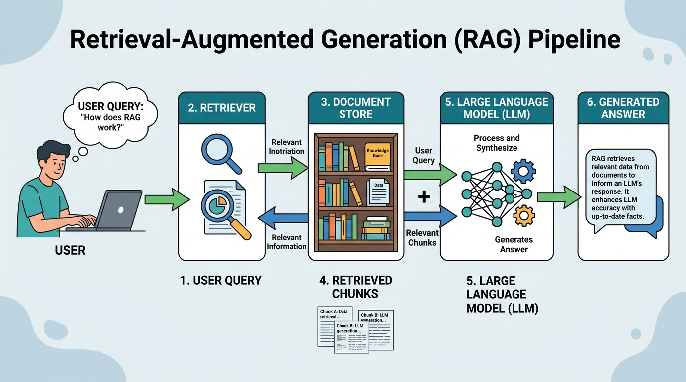

"The best answer is not always inside the model. Sometimes the smartest thing an AI can do is look it up."
RAG AI Agent

Chapter Overview
Large language models are powerful generators but inherently limited by their training data cutoff, their tendency to hallucinate, and the impossibility of encoding all world knowledge in model parameters. Retrieval-Augmented Generation (RAG) addresses these limitations by connecting LLMs to external knowledge sources at inference time, grounding responses in retrieved evidence rather than relying solely on parametric memory. Building on the embedding and vector database foundations from Chapter 19, RAG closes the gap between static model knowledge and dynamic, real-world information.
This chapter covers the complete RAG landscape, from fundamental architectures through advanced retrieval techniques. You will learn how to build ingestion pipelines, implement query transformations, combine dense and sparse retrieval, and leverage knowledge graphs for structured reasoning. The chapter also explores agentic RAG systems that can decompose complex queries, perform iterative research, and synthesize information from multiple sources.
On the structured data side, you will learn how LLMs can query databases through text-to-SQL, process tabular data, and combine structured and unstructured retrieval. Finally, the chapter surveys the major RAG frameworks (LangChain, LlamaIndex, Haystack) that provide production-ready tooling for building retrieval-augmented applications.
Retrieval-augmented generation is one of the most widely deployed LLM patterns in production. By combining retrieval with generation, you can reduce hallucinations, keep responses current, and ground outputs in authoritative sources. This chapter is central to building the knowledge-intensive applications covered in Part VI and Part VIII.
Prerequisites
- Chapter 19: Embeddings & Vector Databases (embedding models, similarity search, vector stores)
- Chapter 10: LLM APIs (calling OpenAI, Anthropic, and other providers programmatically)
- Chapter 11: Prompt Engineering (system prompts, few-shot examples, structured outputs)
- Familiarity with Python, including working with APIs and JSON data
- Basic understanding of SQL and relational databases (for Section 20.5)
Learning Objectives
- Design and implement end-to-end RAG pipelines including document ingestion, chunking, embedding, and retrieval
- Apply advanced retrieval techniques such as HyDE, multi-query expansion, cross-encoder re-ranking, and fusion retrieval (building on prompt engineering principles)
- Construct and query knowledge graphs for structured reasoning, including GraphRAG with community detection
- Build agentic RAG systems capable of query decomposition, iterative research, and multi-source synthesis
- Implement text-to-SQL pipelines for structured data retrieval with schema linking and error correction
- Evaluate RAG system quality using faithfulness, relevance, and answer correctness metrics
- Compare and use RAG orchestration frameworks (LangChain, LlamaIndex, Haystack) for production applications
- Diagnose and fix common RAG failure modes including lost-in-the-middle effects, retrieval drift, and context window overflow
RAG is essentially the AI equivalent of an open-book exam. The model still needs to understand the question and synthesize a good answer, but at least it does not have to pretend it memorized every fact in existence. Turns out, even language models do better when they can check their notes.
Sections
- 20.1 RAG Architecture & Fundamentals Ingestion pipeline design and chunking strategies. Naive RAG architecture. Context window management and the lost-in-the-middle problem. When RAG beats fine-tuning. Indexing strategies for large corpora.
- 20.2 Advanced RAG Techniques Query transformation (HyDE, multi-query, step-back prompting). BM25 and sparse retrieval (complementing classical text representation methods). Cross-encoder re-ranking with Cohere Rerank. Contextual retrieval, CRAG, Self-RAG. Fusion retrieval and multi-modal RAG.
- 20.3 RAG with Knowledge Graphs Knowledge graph fundamentals (entities, relations, triples). RDF and property graphs. Graph embeddings with TransE and DistMult. GraphRAG with community detection. LLM-powered knowledge graph construction.
- 20.4 Deep Research & Agentic RAG Query decomposition and parallel search strategies. Iterative refinement and follow-up generation. Source credibility assessment. Combining web search, document retrieval, and database queries in agentic workflows.
Building a RAG system is a lot like organizing a library. You can have the smartest librarian in the world, but if the books are shelved randomly, the catalog is missing half the entries, and someone chunked the encyclopedias into individual paragraphs with no page numbers, even the librarian is going to hand you the wrong book. The retriever is only as good as the index it searches.
- 20.5 Structured Data & Text-to-SQL LLMs on tabular data. Text-to-SQL with schema linking and multi-table joins. Error correction and self-healing queries. Benchmarks (Spider, BIRD). CSV reading and hybrid structured/unstructured retrieval.
- 20.6 RAG Frameworks & Orchestration LangChain (chains, retrievers, LCEL). LlamaIndex (index types, query engines). Haystack pipelines. Comparing frameworks for different RAG use cases. Production deployment patterns and evaluation.
- 20.7 GraphRAG: Knowledge Graph-Augmented Retrieval Knowledge graph construction from documents, entity and relation extraction, community detection, graph-based retrieval strategies, and combining vector search with graph traversal for richer context.
- 20.8 RAG Ingestion Pipelines and Connectors Document ingestion architectures, connector frameworks, format handling (PDF, HTML, Office), incremental indexing, metadata extraction, and building production-grade data pipelines for RAG systems.
What's Next?
In the next chapter, Chapter 21: Conversational AI, we explore dialogue management, memory, and the patterns that make conversational AI systems effective.